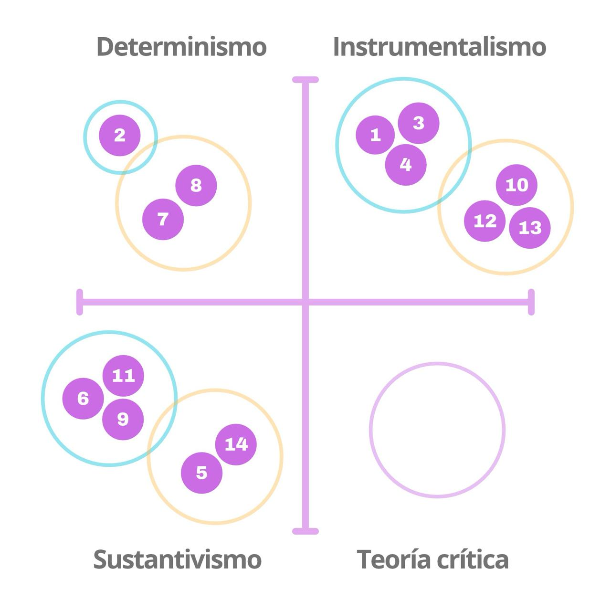
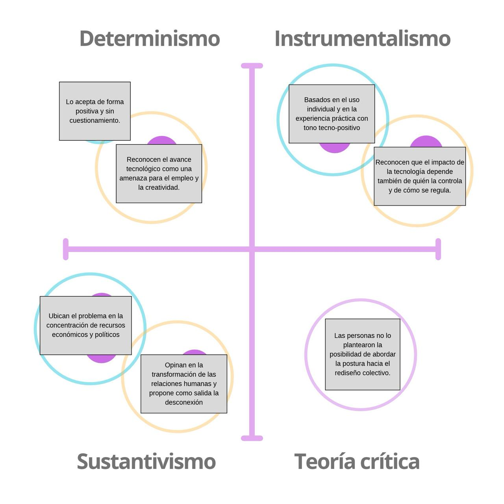

Analisis de entrevistas.
El instrumentalismo aparece de manera explícita en las respuestas de participantes de distintas edades y ocupaciones. Se repite la idea de que la tecnología es una herramienta neutral cuyo valor depende de las intenciones y decisiones de quienes la utilizan. Esto se evidencia en la comparación con un martillo, que puede utilizarse para construir o destruir dependiendo de su usuario.
También se observa que esta narrativa no necesariamente implica una confianza absoluta en la tecnología. En algunas respuestas aparece combinada con preocupaciones relacionadas con la regulación y el control, especialmente cuando se menciona que una herramienta puede generar daños dependiendo de quién la utilice. Por lo tanto, aunque se considera que la responsabilidad recae principalmente en las personas, también se reconoce que el uso tecnológico requiere límites y supervisión.
“Como todo en el mundo, lo puedes usar para algo bueno o para algo malo, como un martillo”.
Hombre, 26 años, ingeniero comercial
“Entonces creo que depende mucho de cómo se utilice y también de quién está detrás de esa tecnología”.
Mujer, 36 años, ingeniera
“Siento que la tecnología no es necesariamente buena o mala. Depende de cómo se use. Y también de quién la controle”.
Hombre, 17 años, cursando cuarto medio
“Agregaría que la tecnología puede ser peligrosa dependiendo de quién la use. Mucha gente puede usar la tecnología para generar un mal a las personas y puede lograrlo, ya que siento que no está tan bien regulada como debería.”
Mujer, 19 años, estudiante de diseño.
El solucionismo aparece de manera explícita en ambas respuestas, ya que la tecnología es descrita principalmente a partir de su utilidad y capacidad para resolver dificultades cotidianas. En ambos casos se destaca su función facilitadora, aunque desde experiencias diferentes: mientras la participante de 19 años se refiere a la ayuda que puede proporcionar en distintas actividades, la participante de 77 años recuerda cómo las herramientas tecnológicas transformaron y simplificaron sus labores docentes.
Es interesante que, pese a la diferencia generacional, ambas perspectivas coinciden en valorar la tecnología por su eficiencia y utilidad práctica. En estos discursos, la tecnología se presenta como un recurso que mejora las actividades humanas, sin profundizar demasiado en sus posibles consecuencias negativas. Esto permite identificar una visión predominantemente positiva de su incorporación en la vida cotidiana.
Se le pregunta por el propósito de la tecnología: “facilitar ciertas cosas y darle una ayuda a las personas principalmente. Facilitar tareas de las personas".
Mujer, 19 años, graduada de enseñanza media y en proceso de rendir la Prueba de Acceso a la Educación Superior.
“Para mi trabajo diario me facilitó mucho las cosas, porque antiguamente las pruebas había que escribirlas a máquina en stencil y uno no se podía equivocar porque era muy difícil borrar, o había que hacer todo de nuevo”.
Mujer, 77 años, profesora de matemáticas.
La nostalgia tecnológica aparece de manera explícita en las respuestas de ambas participantes, quienes establecen una comparación entre las formas de interacción social del pasado y las actuales. La tecnología, particularmente los teléfonos celulares y las redes sociales, es presentada como un elemento que ha interferido en el contacto humano y en las relaciones interpersonales.
Esta narrativa construye una visión idealizada del pasado, en la que la ausencia de dispositivos tecnológicos se asocia con una mayor comunicación, cercanía y convivencia.
Además, esta narrativa puede combinarse con el tecno-pesimismo, ya que ambas presentan consecuencias negativas del desarrollo tecnológico. Sin embargo, mientras el tecno-pesimismo se enfoca en los posibles daños y amenazas de la tecnología, la nostalgia tecnológica enfatiza aquello que se considera perdido frente a su incorporación en la vida cotidiana.
“Podríamos vivir sin celular como antiguamente: nadie tenía uno y la vida era con más contacto social, sin un aparato de por medio”.
Mujer, 49 años, profesora de educación básica mención ciencias naturales. Actualmente es orientadora de un establecimiento educativo.
“Las redes sociales, porque veo a jóvenes pasar mucho tiempo ahí y a veces dejan de conversar con uno. Además que antiguamente, cuando no existía el celular, la gente pasaba mucho más tiempo conversando o saliendo, y eso era mejor”
Mujer, 72 años, jubilada.
El tecnopoder aparece de manera explícita en las respuestas, mediante la identificación de determinados grupos que concentran el control y la capacidad de decisión sobre el desarrollo tecnológico. Los participantes mencionan a las élites, los dueños de empresas y las grandes compañías como actores que poseen una posición privilegiada frente al resto de la sociedad.
Aunque las respuestas presentan distintas interpretaciones sobre quién ejerce este poder y con qué finalidad, todas coinciden en reconocer que el control tecnológico no se encuentra distribuido de manera equitativa. Mientras una participante lo relaciona con la posibilidad de controlar a la humanidad, otros lo vinculan con intereses económicos y con la concentración de recursos necesarios para desarrollar tecnologías avanzadas.
Esta narrativa también permite identificar una relación con la tecnodependencia: si el control de las tecnologías permanece concentrado en determinados actores, las personas e instituciones que necesitan utilizarlas pueden quedar sujetas a sus decisiones. Así, el poder no se manifiesta únicamente en la capacidad de controlar la tecnología, sino también en la influencia que se puede ejercer sobre quienes dependen de ella.
“La gente en el poder; yo diría los dueños de empresas actualmente, porque, de nuevo, ellos quieren generar ingresos y plata”.
Hombre, 20 años, estudiante de diseño.
“La élite mundial, y la utiliza para gobernar y mantener a la humanidad controlada”.
Mujer, 46 años, tens y terapeuta ocupacional.
“También me preocupa la concentración de poder en las empresas que controlan estas tecnologías, porque desarrollar modelos avanzados requiere recursos enormes”.
Hombre, 36 años, ingeniero civil
El tecno-pesimismo aparece de manera explícita en ambas respuestas, aunque se manifiesta desde preocupaciones diferentes. El participante de 19 años expresa temor frente a las consecuencias de la inteligencia artificial en el ámbito artístico, asociándola con una posible pérdida de creatividad y con el deterioro del valor del arte humano. En cambio, el participante de 80 años proyecta sus preocupaciones hacia el ámbito laboral, anticipando que la automatización podría reemplazar progresivamente las funciones humanas y aumentar el desempleo.
A pesar de sus diferencias, ambas respuestas comparten una percepción negativa del avance tecnológico y una preocupación por la pérdida de capacidades o espacios tradicionalmente asociados a las personas. También resulta interesante que estas ideas se presenten como posibles consecuencias del desarrollo tecnológico, especialmente en la respuesta del participante de mayor edad, donde el reemplazo humano por máquinas se plantea como un escenario futuro que parece inevitable.
Esta última percepción permite relacionar el tecno-pesimismo con el determinismo tecnológico, ya que el desarrollo de las máquinas se presenta como un proceso que podría avanzar independientemente de la capacidad humana para detenerlo o modificarlo.
“La inteligencia artificial (...) creo que el arte se está muriendo y eso me da mucha pena; como que ya no hay creatividad”.
Hombre, 19 años, estudiante de diseño
“A futuro, los robots van a colonizar y hacer casi todas las cosas que hacen los seres humanos; con el tiempo van a desarrollar todas las funciones que hacen las personas y va a aumentar la cesantía, porque todo lo va a hacer una máquina.”
Hombre, 80 años. No terminó la educación media, pero se formó como operador de grúas.


Personas de la misma edad o de la misma formación se distribuyen en marcos distintos. El marco depende del ámbito en que cada persona piensa la tecnología: el trabajo, las relaciones sociales, la economía o la automatización. Ninguna persona propone una intervención política. Esto se puede ver en la predominación del instrumentalismo, en el cual la responsabilidad recae en el usuario.